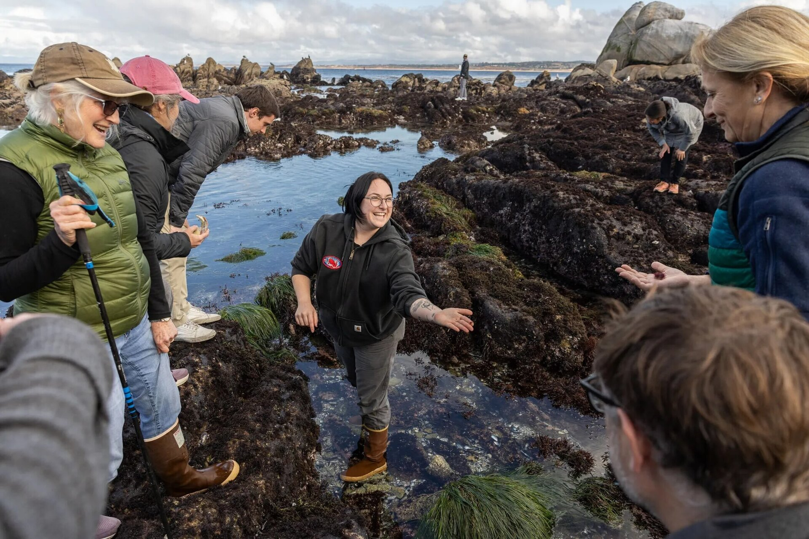
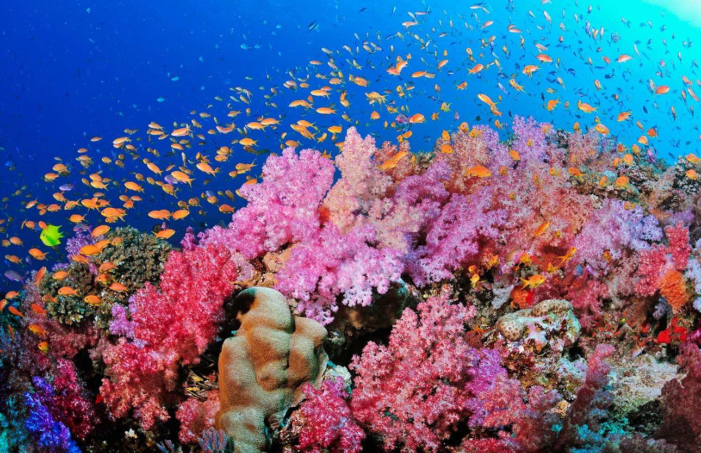

Get Involved!
Volunteer for our monthly beach clean up! All volunteers will be invited for early morning tide pooling with our experts. Get the chance to see nudibranchs and other tide pool dwelling critters in the wild!

Nudibranchs ("naked-gills"), also known as seas slugs, are a diverse group of shell-less marine gastropod mollusks. Nudibranchia is a unique aquarium for it is home to the largest collection of nudibranchs in the world. Our scientists are leaders in marine gastropod research and genomics. We are proud to work with our partners and community in the fight for our planet; reducing ocean trash, helping rebuild coral reefs, and inspiring conservation of marine life. Nudibranchia is a 501(c)(3) non-profit organization.
Nudibranchia's mission is to spread awareness about Nudibranchs and inspire conservation of ocean biodiversity.
We envision a clean, healthy, biodiverse ocean and a society centered around natural spaces.

We value sustainable practices, scientific innovation, and community partnership to amplify our impact.
Volunteer for our monthly beach clean up! All volunteers will be invited for early morning tide pooling with our experts. Get the chance to see nudibranchs and other tide pool dwelling critters in the wild!
